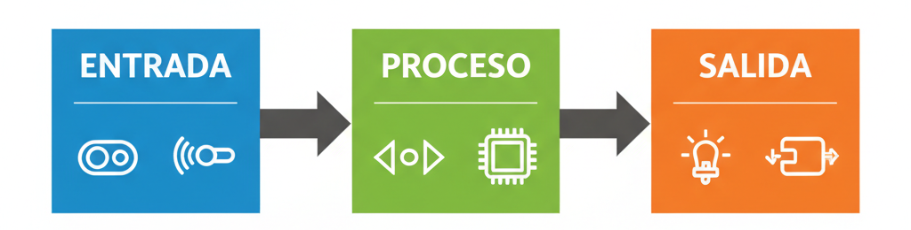
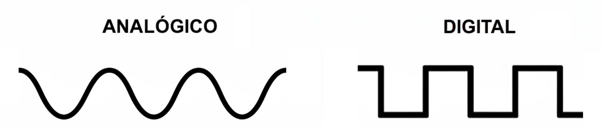
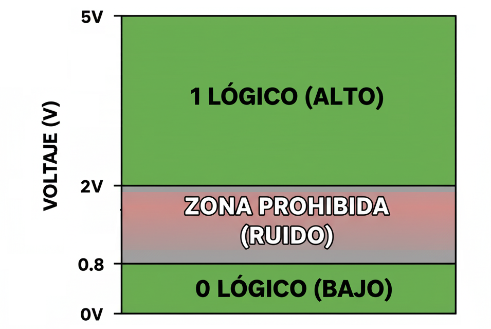

Unidad 2: Lógica Digital - Lección 12
¡Bienvenido a la Unidad 2! En la unidad pasada dominaste la electricidad física: cables, resistencias y energía. Ahora vamos a dar un salto evolutivo. Vamos a dejar de ver la electricidad como "fuerza" y empezaremos a verla como Información. Hoy aprenderemos el idioma que hablan las computadoras: el Álgebra de Boole.
Ahora que entendemos cómo la electricidad puede representar información (0 o 1), exploremos cómo las Inteligencias Artificiales (IA) usan millones de estas representaciones binarias para "razonar" y tomar decisiones. El Álgebra de Boole es el lenguaje fundamental que permite esta "lectura" y "comprensión" elemental para las máquinas. Comprender esta base nos ayuda a interactuar de manera más efectiva con estas herramientas.
Cada vez que una IA procesa una instrucción simple como 'si el correo es spam, muéstralo en otra carpeta', está ejecutando operaciones de lógica booleana como las que aprenderemos hoy.
Antes de entrar en las matemáticas, mira el panorama completo. Todo sistema digital (desde una alarma hasta tu celular) sigue este esquema:

Proceso (Circuitos Digitales) -> Salida (LEDs/Motores)" style="max-width:80%; height:auto;">Fig 0. Nosotros estamos en el bloque verde: "PROCESO".
Vivimos en un mundo analógico (luz, temperatura, sonido), pero nuestras máquinas son digitales. ¿Cuál es la diferencia?

Fig 1. Analógico es como una rampa (infinitos valores). Digital es como una escalera (pasos fijos).
Convertimos el mundo a digital porque es inmune al ruido. Si una señal de 5V baja un poquito a 4.8V por interferencia, en un sistema analógico el sonido cambiaría (estática). En digital, sigue siendo interpretado como un "1". ¡Es más robusto!
Para un estudiante de secundaria, la palabra "digital" significa "pantallas y pantallas táctiles". Tu primer trabajo es romper ese mito y enseñarles que "digital" significa valores fijos y separados (discretos).
No uses gráficas de voltaje el primer día. Usa instrumentos musicales:
El anclaje pedagógico: Al usar el piano, el estudiante entiende que las computadoras no son "mejores" porque sí, sino porque al limitar las opciones a valores fijos (0 y 1), pueden ignorar las pequeñas imperfecciones (ruido) del mundo físico.
Para lograr esa robustez, definimos reglas estrictas de voltaje. En nuestra tecnología (TTL):

Fig 2. La "Zona Prohibida" (0.8V a 2V). Si el voltaje cae ahí, el chip se confunde.
Observa la gráfica de arriba. Nos dice que cualquier voltaje entre 2.0V y 5.0V es interpretado perfectamente como un "1 Lógico" por los chips de la familia TTL (los que usarás de ahora en adelante).
¿Recuerdas el Diodo 1N4007 que instalamos en el riel de energía en la Lección 7 para evitar quemar los circuitos si conectabas el USB al revés?
Como 4.3V está muy por encima del límite de riesgo de 2.0V, el chip lo lee como un 1 perfecto y claro. Esta es la razón de oro por la que te invitamos a proteger TODOS tus circuitos físicos de las Unidades 2, 3 y 4 con el diodo 1N4007. Tendrás total seguridad contra cortocircuitos por polaridad invertida, sin sacrificar la estabilidad matemática de tus compuertas lógicas.
Observa un detalle muy importante: una salida TTL garantiza enviar un "0" entre 0V y 0.4V, pero la entrada interpreta como "0" cualquier voltaje hasta 0.8V. ¡Esa diferencia de 0.4V es nuestro escudo contra el ruido!
Ejemplo práctico: Imagina que un chip envía un "0" perfecto y estable a 0.3V. Por el camino, el cable pasa cerca de un motor y capta interferencia que sube la señal a 0.6V. En un mundo ideal, ese cambio alteraría el resultado, pero gracias al margen de ruido, el chip receptor sigue viendo 0.6V como un "0" válido (porque está por debajo de 0.8V). El sistema funciona correctamente a pesar del ruido.
Es como tener una tolerancia: permitimos que la señal se ensucie un poco sin que pierda su significado. Entre más grande sea este margen, más robusto será nuestro circuito contra interferencias externas.
En la Lección 10 vimos que un cable suelto (flotante) capta ruido. Ese ruido suele tener un voltaje de entre 1V y 1.5V.
Si miras la gráfica de arriba, verás que ese voltaje cae justo en la ZONA PROHIBIDA (Zona Gris). Por eso el chip se volvía loco: el voltaje no era ni 0 ni 1 suficientemente fuerte.
La solución: La resistencia Pull-Down obliga al voltaje a bajar a 0V (Zona Segura), sacándolo del peligro.
Antes de empezar con AND, OR y NOT, debes advertirles a tus alumnos que están a punto de entrar a un universo con física alienígena. Si no haces esta advertencia, cuando escribas \(1 + 1 = 1\) en la pizarra, perderás el respeto de la clase.
Diles a tus estudiantes: "A partir de este momento, olviden todo lo que saben sobre cantidades. Hoy no vamos a contar manzanas ni calcular dinero. Hoy vamos a calcular ESTADOS."
La regla de oro para el maestro:
Siempre recuérdales que en este curso, los números no representan cantidades, representan estados físicos de la materia (5 Voltios o 0 Voltios). El número 2 no existe en nuestro universo eléctrico.
Ahora que tenemos 0s y 1s, ¿cómo operamos con ellos? George Boole inventó una matemática para esto.
George Boole (1815-1864) no era ingeniero ni electricista. Era un matemático y filósofo inglés completamente autodidacta (no pudo ir a la universidad por ser pobre). Su gran obsesión no eran las máquinas, sino la mente humana: ¿Podemos escribir las reglas del pensamiento y la filosofía usando ecuaciones matemáticas?
En 1854 publicó su obra maestra: Las Leyes del Pensamiento, donde inventó este universo de ceros y unos. Sus colegas matemáticos pensaron que era un juego inútil. Boole murió trágicamente a los 49 años de neumonía tras caminar 3 kilómetros bajo una lluvia torrencial para dar sus clases.
Murió pensando que su álgebra era solo filosofía abstracta. Jamás imaginó que, casi 100 años después, sus "juegos matemáticos" se convertirían en los cimientos exactos sobre los que se construirían todos los celulares, computadoras y satélites de la historia humana. ¡Estás aprendiendo el lenguaje de un genio adelantado a su época!
Equivale al circuito en Paralelo. La corriente pasa si se cierra un camino O el otro.
El Misterio del \(1 + 1 = 1\)
En álgebra normal, \(1+1=2\). Pero en Boole, sumamos Verdades.
Ejemplo: Para entrar a un concierto necesitas: Boleto comprado (\(A\)) O Estar en la lista de invitados (\(B\)).
Equivale al circuito en Serie. La corriente solo pasa si todos los puentes están bajados.
El "Portero Estricto" (Todo o Nada)
La compuerta AND es la más exigente de todas. Para que la salida sea 1, necesita que TODAS las entradas sean 1 al mismo tiempo.
Ejemplo: Para entrar a tu correo necesitas: Usuario Correcto (\(A\)) AND Contraseña Correcta (\(B\)).
Matemáticamente es una multiplicación: basta con que haya un solo cero para que todo el resultado sea cero (\(1 \cdot 0 \cdot 1 \cdot 1 = 0\)).
Es la operación del Complemento. Su única función es llevar la contraria.
Además de AND y OR, existe una operación fundamental llamada NOT (o Negación/Inverso), que también es crucial en lógica digital. Juntas, estas tres operaciones (AND, OR, NOT) forman la base para construir razonamientos lógicos complejos, tanto para nosotros como para las computadoras y las IAs. Profundizaremos en el NOT en próximas lecciones. Puedes preguntarle a una IA: "¿Qué hace la operación lógica NOT y cómo se representa?"
El "Adolescente Rebelde" de las Matemáticas
La compuerta NOT nunca está de acuerdo con la entrada. Siempre invierte la realidad:
Matemáticamente, se escribe poniendo una "gorra" o barra encima de la letra (\(\bar{A}\)). Si \(A\) es la luz, \(\bar{A}\) es la oscuridad.
Si tu condición para ir de fiesta es: "Tener dinero (A) Y Tener tiempo (B)", la ecuación es:
$$Fiesta = A \cdot B$$
Si solo tienes dinero (\(A=1\)) pero no tiempo (\(B=0\)), el resultado es \(1 \cdot 0 = 0\). ¡No hay fiesta!
Explora Digitalmente: Visita el simulador Falstad (disponible en la página de herramientas) o usa una calculadora booleana en línea para experimentar con expresiones simples como A AND B o A OR B. Observa cómo cambia la salida (resultado) al modificar las entradas (A y B).
Dos expertos analizan los conceptos de esta lección y comparten estrategias para enseñar el Álgebra de Boole y su importancia como base de la lógica digital en el aula. Discuten cómo introducir las operaciones AND, OR y NOT de forma comprensible y cómo conectar estos conceptos con la toma de decisiones en la vida cotidiana y con la operación de las computadoras e inteligencias artificiales. Comparten analogías útiles y reflexiones sobre la integración de herramientas digitales en el proceso de enseñanza-aprendizaje.
Abre tu cuaderno y escribe:
Tenemos las ecuaciones básicas ($A \cdot B$, $A + B$). Pero, ¿cómo estamos seguros de qué hace nuestro circuito en cada situación posible? ¿Qué pasa si A es 0 y B es 1? Para no adivinar, necesitamos un mapa completo. En la siguiente lección, aprenderemos a crear Tablas de Verdad.